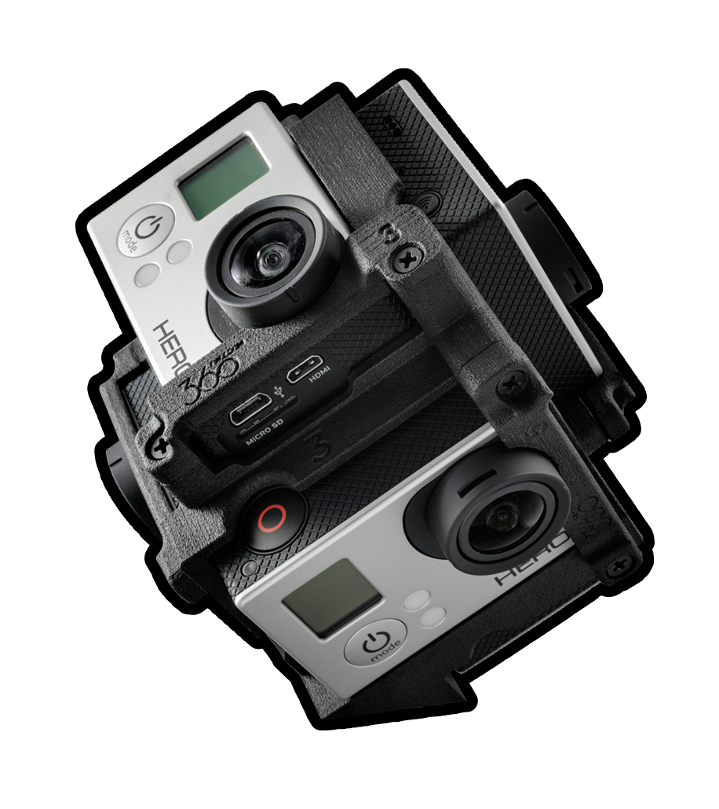
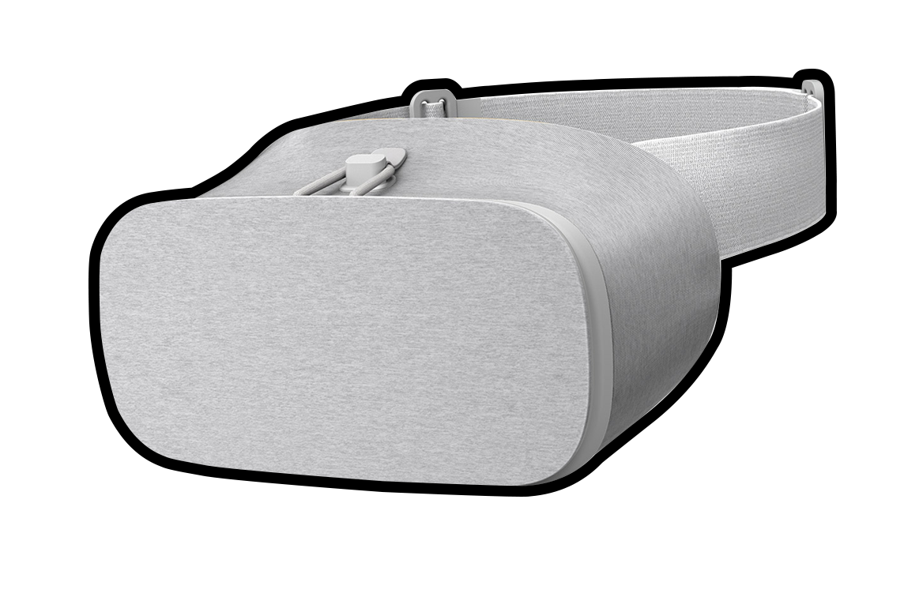

Jesteśmy warszawiakami. Mamy dosyć miasta zasłoniętego reklamami. W zeszłym roku stworzyliśmy spot, który uświadamiał mieszkańcom naszego miasta jak Warszawa wyglądałaby bez wielkoformatowych płacht.
Mimo sukcesu zeszłorocznej edycji akcji problem nadal istnieje, dlatego my kontynuujemy nasze działania. Zmiana jest nieunikniona, największe stolice Europy juz zaostrzyły swoje przepisy. My wierzymy, że da się ten proces przyspieszyć z korzyścią dla nas wszystkich.
W ramach drugiej edycji nadal chcemy zwracać uwagę warszawiaków na ukryte piękno naszego miasta, ale zrobimy to na dużo większą skalę.
Używajac kamery 360 chcemy stworzyć filmowe panoramy w popularnych lokalizacjach Warszawy.
W wybranych punktach w Warszawie dystrybuowane będą Cardboardy, a do ich obsługi posłuży ogólnodostępna aplikacja. Po umieszczeniu telefonu w okularach i ustawieniu się w jednym z wybranych punktów każdy będzie mógł podziwiać tę okolice bez reklam.
Dodatkowo chcielibyśmy przez jeden weekend ustawić w centrum Warszawy stoisko przy ktorym moglibyśmy zachęcać prczcechodniów do wzięcia udziału w akcji oraz przedstawić inne możliwości gogli Daydream.
Liczymy na kontakt i możliwość spotkania podczas którego moglibyśmy więcej i bardziej szczegółowo opowiedzieć o akcji.
Pozdrawiamy,